Overview
Volume Labeler annotates 3D volume data. Paint labels directly on the cross-sections or on the top-down projection, keep the work inside a layer slab so you never mark the wrong tissue, measure how much of each label you have drawn, and save the result as a label map for later use. Everything runs locally, your data never leave the machine.
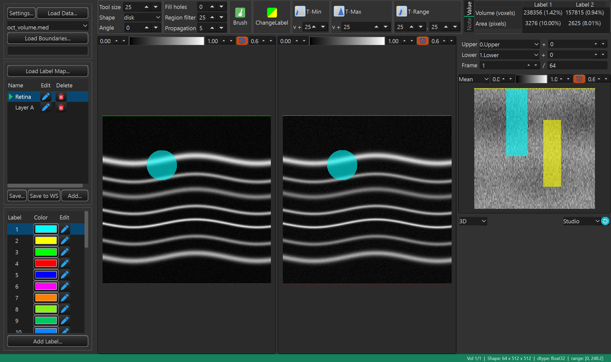
What you can do
- Load a volume, an optional second volume, boundary curves, and a previously saved label map.
- Paint labels freely with a brush, or let a threshold tool pick the voxels for you.
- Limit painting to a slab defined by an upper and a lower boundary curve.
- Paint on the en face projection to label whole columns through the volume at once.
- Keep several named label maps and a palette of label classes, each with its own color.
- Read the volume and area of every label as you work, and keep free-text notes.
- Inspect the labels as a 3D rendering, then save the maps to a file or the workspace.
Requirements
- MedICS, installed and running.
Install
Install the extension from inside MedICS — no command line needed.
Open the Extension Manager
In MedICS, open Extensions → Open Extension Manager… from the menu bar.
Find the extension
Scroll the list to Volume Labeler.
Install it
Select the extension and click Install, then wait for the download to finish.
Enable it
If it is not already enabled, click Load. The extension then appears under the Extensions menu and on the Activity Bar.
First run
Click the Volume Labeler icon on the Activity Bar to open it.
Quick start
Load a volume
Click Load Data… and choose a volume, or drag a file onto the window. If a volume is already open you are asked whether to Replace it or Overlay the new one.
Add boundaries (optional)
Click Load Boundaries… to load layer curves, then pick the Upper and Lower layers. This limits painting to a slab.
Choose a map and a label
In the left panel select a label map and a label class (its colour).
Paint
Pick Brush (or another tool) in the toolbox and paint on Left B-frame, Right B-frame, or the en face view.
Review
Step through frames and check the Value tab and the 3D viewer as you go.
Save
Click Save… to write the maps to a file, or Save to WS to send them to the MedICS workspace.
The Volume Labeler window
The window is a set of panels around the volume. The left panel loads data and manages maps and labels; the toolbox across the top holds the painting tools; the rest shows the volume.
| Area | What it is for |
|---|---|
| Left panel | Load the volume, boundaries and label maps; manage the label maps and label classes. |
| Toolbox | The painting tools, their size and shape, the cleanup steps, and the measurement / note tabs. |
| Left B-frame | The left cross-section — the volume as an underlay, with an optional second volume and the labels on top. |
| Right B-frame | The centre cross-section — the primary volume and the labels; the main place to paint. |
| Boundaries | The upper / lower layer selection, their offsets, and the current frame. |
| en face | A top-down projection through the slab; paint here to label whole columns. |
| 3D viewer | A 3D rendering of the active label map. |
| Status bar | Volume information, the pointer readout, and short messages. |
Loading data
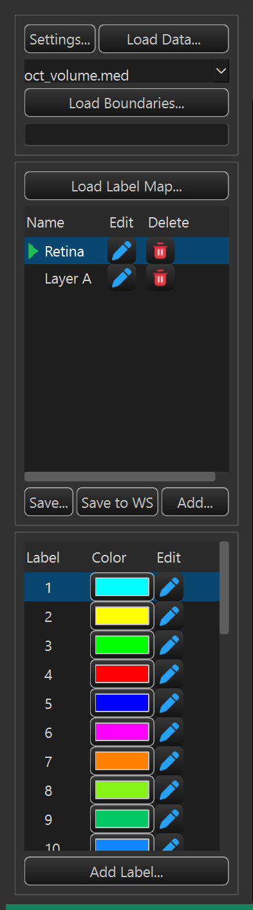
Loading a volume
Click Load Data… to choose a file, or drag files and folders onto the window. If a volume is already open, MedICS asks what to do with the new one.
| Choice | Effect |
|---|---|
| Replace | Clears the current labels and loads the new volume in their place. |
| Overlay | Keeps the current volume and layers the new data on top of it as a second (overlay) volume. |
| Cancel | Does nothing. |
Supported volume formats include .med, .tif/.tiff, .mat,
.oct, .foct, .dcm and .img. A file whose type is not
obvious opens the Select Data Type dialog, where you say whether it is Volume Data,
an Overlay, Label Data or Boundary Data.
Companions loaded automatically
When a volume loads, the extension looks next to it for related files and loads them too:
| File | What it is |
|---|---|
<name>_lmp.tiff or <name>_lmp.med | A saved label map (the newest is preferred when both exist). |
Boundary files — seg.mat, _seg.mat, segmentation.mat and their .med forms | Layer curves for the upper and lower boundaries. |
<name>.ssada and other second-volume siblings | A second volume drawn as an overlay on Left B-frame. |
Boundaries
Click Load Boundaries… to load layer curves (.json, .mat, .med,
.dcm). Then choose the Upper and Lower layers and, if needed, nudge each
one with its offset. The slab between them drives the en face projection and shades the B-frames, so
painting stays inside the tissue you care about. See Frames & the slab.
Label maps
Click Load Label Map… to bring back a saved map (.tiff, .med, .mat,
.png). Maps written by this extension store their data under a label tag, so they
reload without any extra questions. You can also drop a label file onto the window, or load a
labelled array from the workspace.
Load Data Settings
The Settings… button opens Load Data Settings. Use it when a file is not recognised, or to teach the extension a custom format. It works the same way as in the Retinal Layer Segmentation extension.
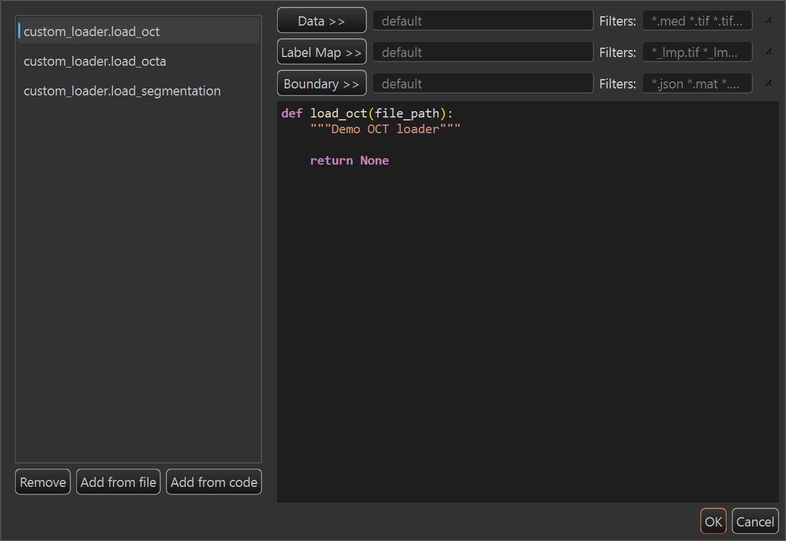
| Element | What it does |
|---|---|
| Loader list | Every loader function found in the custom-loader folder, shown as module.function. Select one to assign it or preview its code. |
| Remove / Delete | Marks the selected function as deleted so it is no longer offered. |
| Add from file | Copies a loader .py file into the custom-loader folder and rescans the list. |
| Add from code | Opens a small editor to write or edit a loader function. |
| Data >> / Label Map >> / Boundary >> | Assigns the selected function as the loader for that input. |
| Filters | The file patterns the assigned loader handles, for example *.mat *.tif. A filter is required for every assigned loader. |
| Clear (×) | Returns that row to the built-in loader. |
| Code preview | Read-only source of the selected function. |
Label maps & label classes
Label maps
A label map is one full 3D labelling of the volume. You start with a single map called Default, and you can keep several — for example one per structure, or one per annotator.
| Column / button | What it does |
|---|---|
| Name | The map's name. The selected map is the one you paint into and the one the 3D viewer shows. |
| Edit (pencil) | Opens Edit Label Map to change the name and description. |
| Delete (trash) | Removes the map after a confirmation. At least one map must always remain. |
| Add… | Opens Add Label Map to create a new, empty map — or a copy of an existing one. |
| Load Label Map… | Loads maps from a file. |
| Save… / Save to WS | Save the maps to a file, or send them to the workspace. |
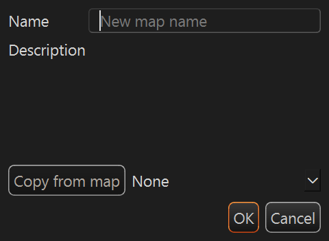
| Field | What it does |
|---|---|
| Name | The new map's name; it must be unique. |
| Description | An optional description shown as a tooltip in the map list. |
| Copy from map | Choose None for an empty map, or pick an existing map to start from a copy of it. |
Label classes
The Label list holds your paint classes. The extension starts with 32 ready-made labels, each with its own colour; the first six are the classic primaries (cyan, yellow, green, red, blue, magenta). The active label — marked with a dot — is the value every tool writes.
| Column / button | What it does |
|---|---|
| Label | The class name. Click a row to make it the active paint label. |
| Color | The class colour swatch; click it to change the colour. |
| Edit (pencil) | Opens Modify Label to change the name, colour and description. |
| Add Label… | Adds a new class. |
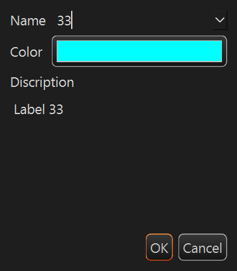
Label names must be unique and cannot be empty. Colour changes take effect straight away in every view. Value 0 is always the untouched background, and paints as transparent.
The toolbox
The toolbox runs along the top of the window. It holds the tool size and shape, the cleanup steps that tidy a stroke, the painting tools themselves, and two tabs — Value and Note.
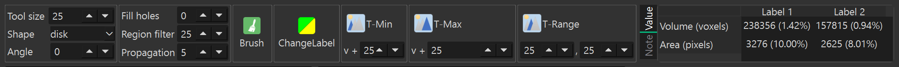
Size & shape
| Control | What it does |
|---|---|
| Tool size | The brush diameter, in pixels (1–500; default 25). |
| Shape | The brush outline — disk, square, rod or ellipse. |
| Angle | The orientation of the rod and ellipse shapes, in degrees (0–359). |
You can change the size and angle without leaving the image: scroll the wheel to resize, and hold Alt while scrolling to rotate.
Cleanup
| Control | What it does |
|---|---|
| Fill holes | Fills holes smaller than this many pixels inside a stroke. Set it to 0 to leave holes alone. |
| Region filter | Removes connected regions smaller than this many pixels, cleaning up stray specks (default 25). |
| Propagation | How many frames the ← / → keys jump (default 5). |
Painting tools
Exactly one tool is active at a time. Click a tool to turn it on; click it again (or press its key) to turn it off.
| Tool | Key | What it does |
|---|---|---|
| Brush | Q | Paints the active label under the pointer as you drag. |
| ChangeLabel | W | Repaints pixels that already carry a label to the active label — handy for fixing a wrong class. |
| T-Min | E | Labels pixels darker than the value you click, plus the “v +” offset. |
| T-Max | R | Labels pixels brighter than the value you click, plus the “v +” offset. |
| T-Range | T | Labels pixels within a value window around the value you click (a low and a high offset). |
The three threshold tools select by the pixel value under the pointer, so they give you a quick, intensity-aware fill instead of painting every voxel by hand.
Painting
Choose a tool in the toolbox, make sure the right label and map are selected, then paint on Left B-frame, Right B-frame or the en face view.
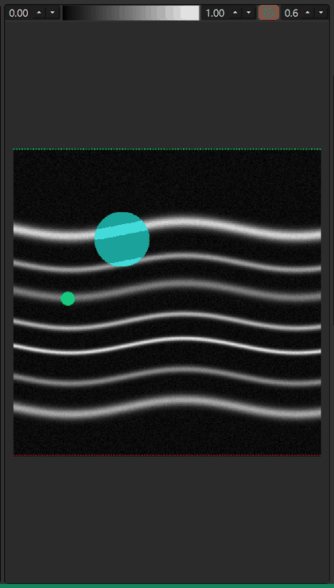
| Mouse action | Result |
|---|---|
| Left-drag | Applies the active tool — paints the current label (or runs the threshold / change-label tool). |
| Right-drag | Erases the label under the pointer. |
| Middle-click | Undoes the last stroke. |
| Wheel | Changes the tool size. |
| Alt + wheel | Rotates the tool angle. |
| Ctrl + wheel | Zooms the view. |
| Ctrl + drag | Moves the frame indicator: scrubs the B-frame stack and the matching en face column. |
Hold Space to hide the label overlays for a moment so you can see the image underneath, and hold Ctrl to switch to navigation mode, where the pointer scrubs frames instead of painting.
Painting on the en face view
The en face view is a top-down projection through the current slab. Painting there marks a whole column of the volume at once — the fastest way to label a vertical structure across many frames. The yellow line marks the frame currently shown in the B-frames; drag it to change frames.
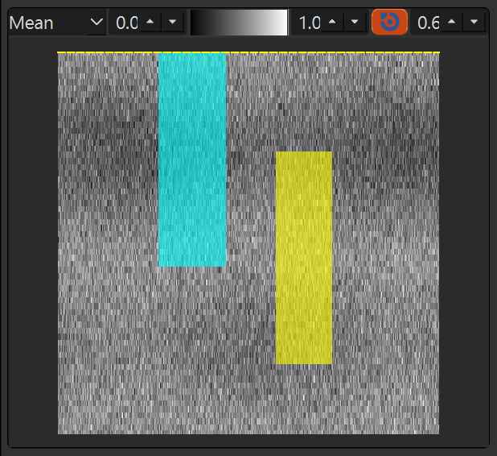
Frames & the slab
The Boundaries bar sets the slab and the current frame.
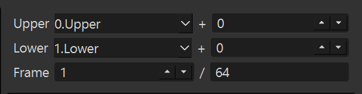
| Control | What it does |
|---|---|
| Upper | The layer that bounds the slab from above, plus an offset in pixels. |
| Lower | The layer that bounds the slab from below, plus an offset in pixels. |
| Frame | The B-scan currently shown (1-based) and the total number of frames. |
| Keys | Action |
|---|---|
| ↑ / ↓ | Previous / next frame. |
| ← / → | Jump back / forward by the current Propagation step. |
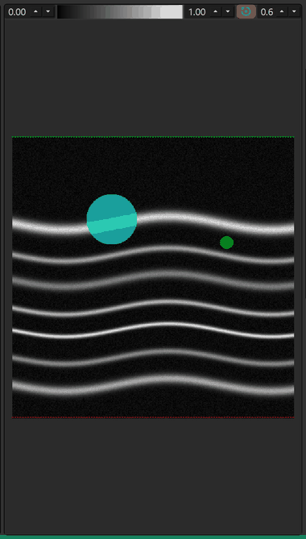
Shortcuts apply while the Volume Labeler tab has focus, and are ignored while you are typing in a text field or spin box.
The views
Two cross-sections, one en face projection and one 3D rendering. They stay in sync as you move through the volume.
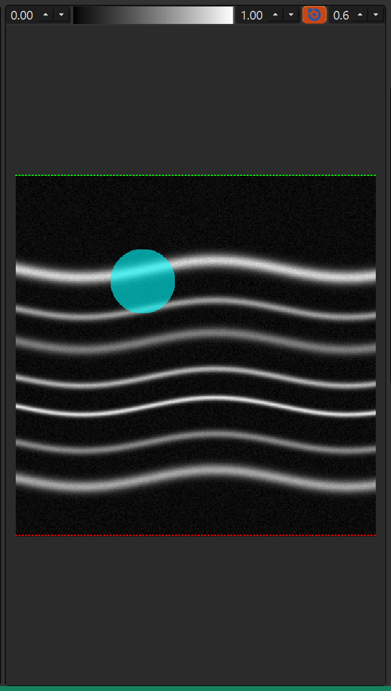
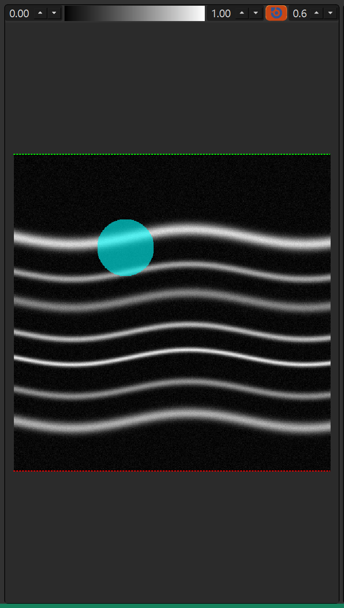
| View | Shows |
|---|---|
| Right B-frame | The primary volume and the label overlay. |
| Left B-frame | The volume with an optional second volume drawn on top, and the label overlay. |
| en face | A top-down projection through the slab, with the labels and the current-frame indicator. |
| 3D | An interactive 3D rendering of the active label map. |
Per-view controls
Each image view has a small toolbar above it.
| Control | What it does |
|---|---|
| Low / High | The contrast window: the low and high values mapped to black and white. |
| Colorbar | The greyscale (or overlay) ramp; click it to choose a different colour map. |
| Show/Hide label | Turns the label overlay on or off. |
| Transparency | How strongly the labels show through the image (0 = invisible, 1 = fully opaque). |
| Projection | On the en face view: Mean, Maximum, Minimun or Thickness. The mode replots the projection. |
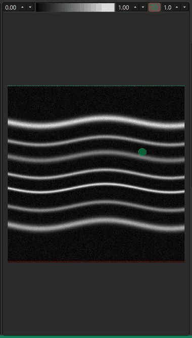
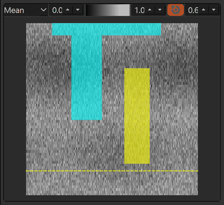
B-frame context menu
Right-click inside a B-frame for display and export actions.
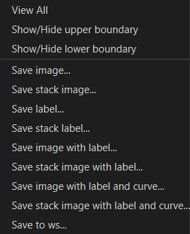
| Item | Action |
|---|---|
| Show/Hide upper boundary | Toggle the upper curve over the image. |
| Show/Hide lower boundary | Toggle the lower curve over the image. |
| Save image… | Save the current frame as an image. |
| Save stack image… | Save the whole stack as an image. |
| Save label… | Save the current frame's label overlay. |
| Save stack label… | Save the whole stack's label overlay. |
| Save image with label… | Save the current frame with the labels drawn on it. |
| Save stack image with label… | Save the whole stack with the labels drawn on every frame. |
| Save image with label and curve… | Save the current frame with both the labels and the layer curves. |
| Save stack image with label and curve… | The same, for every frame. |
| Save to ws… | Send one of the panel's layers (image or label) to the MedICS workspace. |
The en face view has its own menu with View All, the centre-point and ETDRS-grid toggles, the image and label saves, and Save to ws.
The 3D viewer
The 3D dock renders the active label map (not the raw volume), so you can orbit a shape and confirm a label is where you expect it. Its toolbar has a mode selector, a lighting preset and a camera reset.
| Control | What it does |
|---|---|
| 3D / Enface | Switches the dock between the 3D rendering and the overlay-volume en face (enabled once a second volume is loaded). |
| Lighting | One of Headlight, Three Lights, Ambient or Studio. |
| Reset Camera | Returns the camera to its default view. |
Drag to orbit, scroll to zoom, and use the on-screen axis gizmo to re-orient the camera. If 3D rendering is unavailable, the dock shows a short note instead.
Measurements & notes
The toolbox has two tabs next to the tools.
| Tab | What it shows |
|---|---|
| Value | A table of measurements for the active map. Each label gets a column, with rows for Volume (voxels) and Area (pixels), and each cell also shows the percentage of the total. |
| Note | A free-text box. What you type here is saved together with the label maps. |
The measurements update as you edit labels, in the background, so the window stays responsive while you paint.
Saving & exporting
Save… opens Save Label Map As with a default name of <volume>_lmp. Pick a
format:
| Format | What it stores |
|---|---|
TIFF (.tiff / .tif) | All maps stacked along the frame axis, with the colour map and a description in the metadata. |
MAT (.mat) | The maps, label definitions, notes and descriptions under a label tag. |
MED (.med) | The same label payload in MedICS's own format. |
MedImage (.medimage / .medimg / .mi) | A full image bundle of the session. |
Save to WS instead asks for a workspace variable name (defaulting to the current map's name) and stores the maps there, ready for other MedICS tools.
Every file the extension writes is tagged, so when you load it back the maps, labels, colours and notes are recognised and restored without any extra prompts.
Status bar
The green bar along the bottom reports what is happening.
| Readout | Meaning |
|---|---|
| Background tasks | Short notes such as Syncing enface to volume or Updating measurements while work runs in the background. |
| Mouse position | Where the pointer is over the image. |
| Pixel value | The value under the pointer. |
| Data summary | The volume number, its shape, data type and value range, plus the second volume's shape when one is loaded. |
One-off messages — loading, saving, warnings — also appear here.
Keyboard shortcuts
| Keys | Action |
|---|---|
| ↑ / ↓ | Previous / next frame. |
| ← / → | Jump by the current Propagation step. |
| Q | Toggle the Brush tool. |
| W | Toggle the ChangeLabel tool. |
| E | Toggle the T-Min tool. |
| R | Toggle the T-Max tool. |
| T | Toggle the T-Range tool. |
| Space (hold) | Temporarily hide the label overlays. |
| Ctrl (hold) | Navigation mode — the pointer scrubs frames instead of painting. |
Mouse & interaction
| Action | Result |
|---|---|
| Left-drag in a view | Applies the active tool (paints, or erases with the right button). |
| Right-drag | Erases labels under the pointer. |
| Middle-click | Undoes the last stroke. |
| Wheel | Changes the tool size. |
| Alt + wheel | Rotates the tool angle. |
| Ctrl + wheel | Zooms the view. |
| Ctrl + drag | Scrubs frames via the indicator. |
| Drag in the 3D view | Orbits the rendering; scroll to zoom. |
| Right-click a B-frame or en face | Opens that view's context menu. |
Notes & limitations
- A label map is a full 3D volume, so large volumes use a lot of memory; the 3D view is refreshed in the background to keep painting smooth.
- Painting on the en face view updates the 3D label volume in the background; the sync follows shortly after you release the mouse.
- Non-square volumes are shown square in the en face view; painting maps back to the true size automatically.
- The 3D viewer renders labels, not intensities — it is a way to check labels, not to review the image.
- Everything is computed locally; no image data is uploaded.